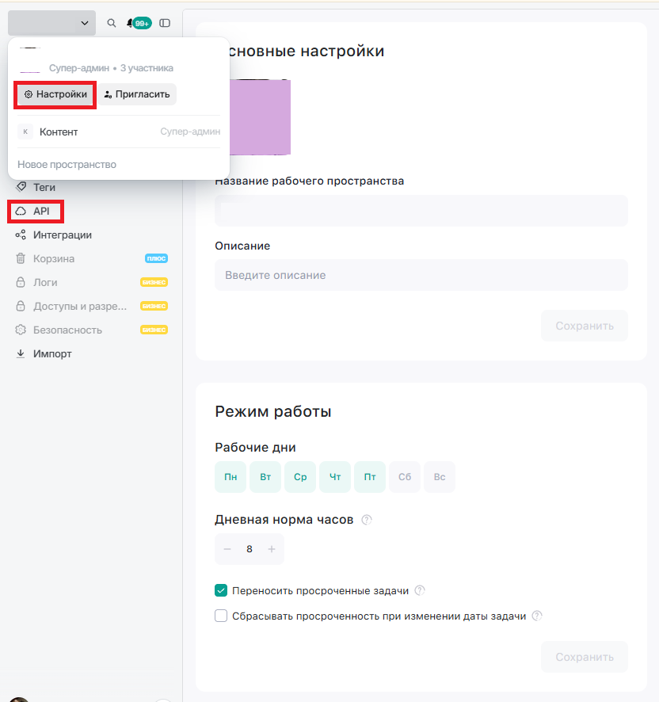
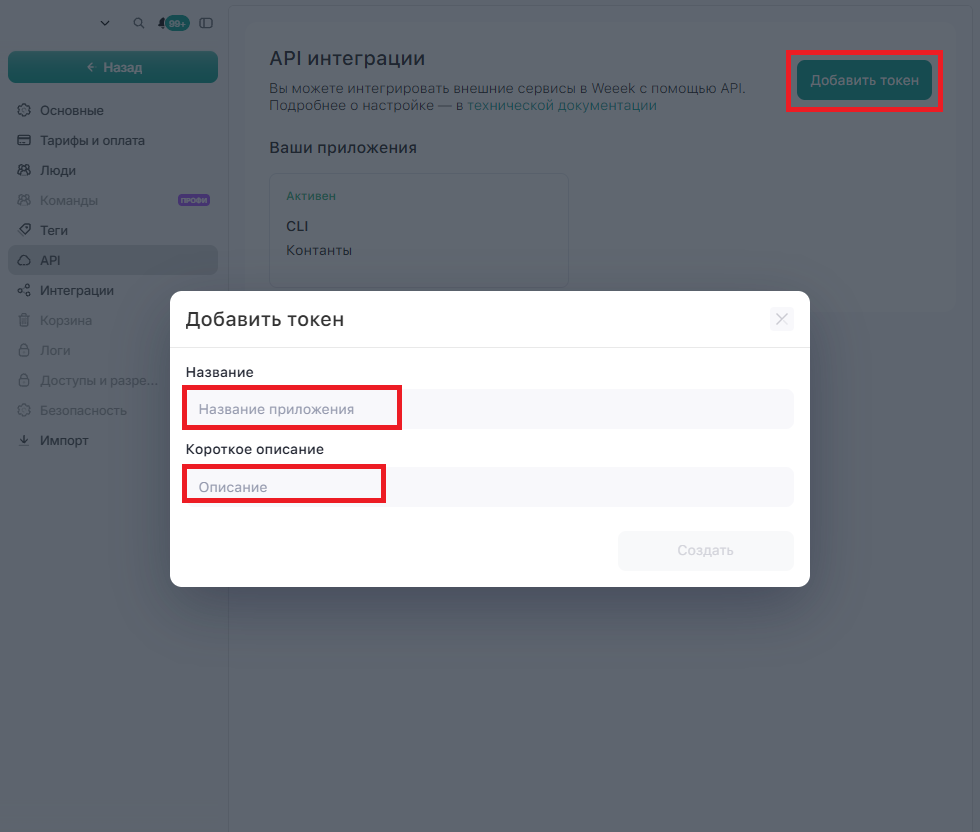
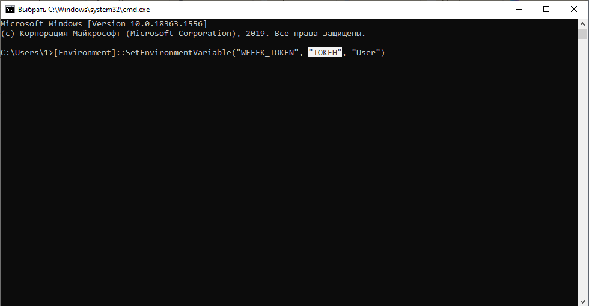
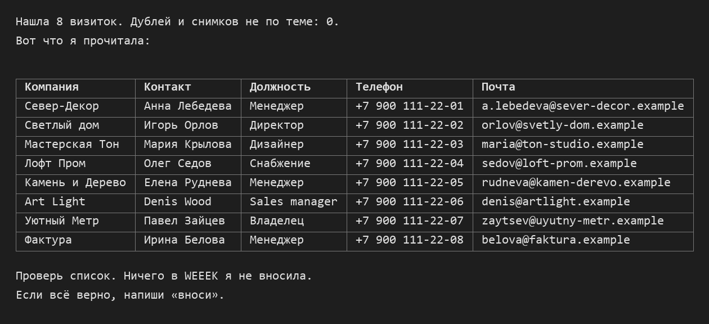
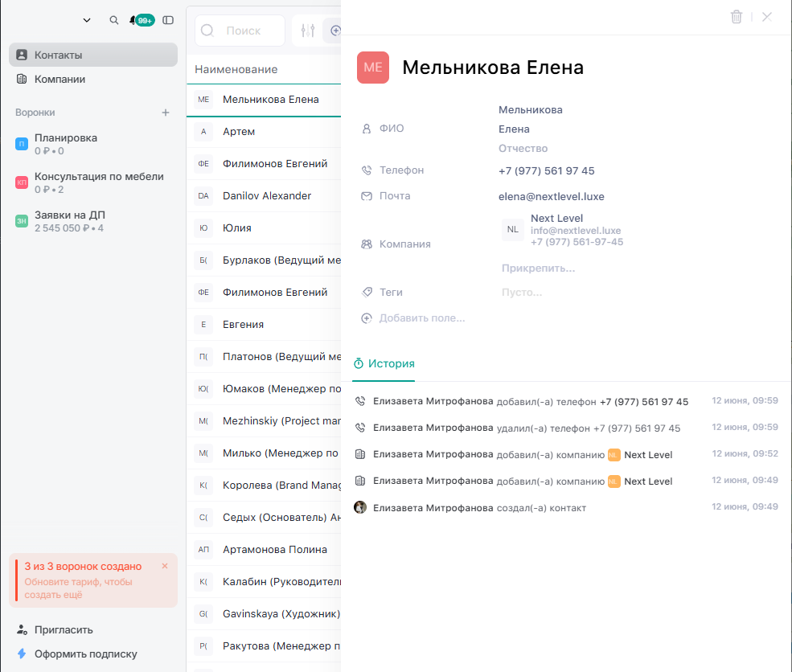

Содержание
Тебе понадобится ИИ-агент Claude Code. Если он ещё не стоит на компьютере, сначала пройди инструкцию по установке, это займёт несколько минут.
Что нужно
- Claude Code на твоём компьютере (платный тариф Claude, Pro или Max).
- CRM в WEEEK с воронкой, в которую попадут компании и контакты.
- Фотографии визиток в одной папке: лицевая сторона и, если на обороте есть текст, оборот.
- Ключ доступа к WEEEK (API-токен). Ниже я покажу, где его взять.
Шаг 1. Сфотографируй визитки
- Клади визитки на ровную светлую поверхность и снимай сверху, чтобы текст был читаемым и без бликов.
- Одна визитка в кадре, лучше, чем несколько визиток на одном снимке.
- Если на обороте есть телефон или другой язык, сними и оборот.
- Сложи все фото в одну пустую папку, например «Визитки выставка». Это будет папка агента.
Я проверила это на выставке: агент без труда читает и русские, и английские визитки, а иероглифы переводит, если попросить. Дубли и случайные снимки (например, скриншот) он замечает и откладывает в сторону.
Шаг 2. Получи ключ доступа к WEEEK
Ключ нужен, чтобы агент от твоего имени вносил данные в WEEEK. Это как пароль, который даёт только нужные права. Токен создаётся в том рабочем пространстве, где лежит твоя CRM.
- Открой WEEEK в браузере и выбери рабочее пространство, где у тебя CRM.
- Нажми на название рабочего пространства в левом верхнем углу, выбери «Настройки», затем раздел «API». Подробнее об этом пишет справка WEEEK.

Настройки WEEEK, раздел «API» - Нажми «Добавить токен», в поле «Название» напиши, например, «Визитки», добавь короткое описание и нажми «Создать».

Создание токена в WEEEK - Скопируй токен и сразу перейди к следующему шагу, чтобы он не потерялся.
Шаг 3. Положи токен в настройки компьютера
Открой PowerShell и вставь команду, заменив слово ТОКЕН на свой ключ. Она запишет его в переменную WEEEK_TOKEN, откуда агент его возьмёт.
[Environment]::SetEnvironmentVariable("WEEEK_TOKEN", "ТОКЕН", "User")Затем закрой PowerShell и открой его заново: новая переменная подхватится только в новом окне.

На Mac открой Терминал и вставь вот эту команду, тоже заменив слово ТОКЕН на свой ключ. После неё тоже открой новое окно.
echo 'export WEEEK_TOKEN="ТОКЕН"' >> ~/.zshrc
Шаг 4. Запусти агента и дай ему задание
- В PowerShell перейди в папку с фото командой cd и путь к папке.
- Набери claude и нажми Enter.
- Собери свой промт ниже, нажми «Скопировать» и вставь в Claude Code.
Собери свой промт
Заполни поля и нажми «Сгенерировать промт». Сайт подставит ответы в текст, и тебе останется его скопировать.
В этой папке лежат фото визиток с события: [название выставки и дата]. Внеси их в мою CRM WEEEK. Работай в таком порядке. 1. Сначала прочитай документацию API WEEEK на developers.weeek.net и выясни, какие методы есть для CRM: компании, контакты, сделки, воронки. Если какого-то из нужных методов в API нет, скажи мне об этом сразу и предложи, как поступить. 2. Токен возьми из переменной окружения WEEEK_TOKEN. Не выводи его на экран и не записывай в файлы. 3. Посмотри все фото. Лицевую и оборотную стороны одной визитки объедини в одну запись. Дубли и снимки, которые не являются визитками, отложи и покажи мне отдельным списком. 4. С каждой визитки возьми: компанию, имя и фамилию, должность, телефон, почту, сайт. Иероглифы переведи на [язык перевода]. Чего на визитке нет, оставляй пустым и ничего не придумывай. 5. Сохрани результат в файл визитки.json и покажи мне список таблицей: компания, контакт, должность, телефон, почта. Номера телефонов приведи к одному виду. 6. Дальше жди. Ничего в WEEEK не вноси, пока я не проверю список и не напишу «вноси». 7. После моего подтверждения посмотри, что уже есть в CRM, чтобы не создать дубли: компании и контакты с тем же названием или почтой пропускай. Внеси остальные в воронку [название воронки], компании отдельно, контакты привяжи к своим компаниям. В заметку к каждой записи добавь, откуда она: [название выставки и дата]. 8. В конце скажи, сколько компаний и контактов внесено, сколько пропущено как дубли и что не получилось.
Шаг 5. Сверь список и подтверди
Агент покажет таблицу. Пробегись по ней глазами: опечатки в именах, чужие номера, перепутанные компании. Если нашла ошибку, напиши агенту, что исправить. Когда всё верно, напиши «вноси».

Эта сверка нужна, потому что агент иногда путает плохо различимые цифры на фото. Внесённое в CRM потом тяжелее исправлять, чем исправить в таблице.
Шаг 6. Проверь результат в WEEEK
- Открой CRM в WEEEK и найди новые компании и контакты.
- Открой пару карточек и сравни с визитками: телефон, почта, привязка к компании.

Карточка компании в CRM WEEEK с контактом - Если что-то внесено не так, скажи агенту. Он исправит запись или внесёт недостающее.
Если что-то пошло не так
- Агент пишет, что токена нет. Закрой PowerShell, открой заново и проверь, что команда из шага 3 сработала.
- Агент не видит твою воронку. Токен выпущен в другом рабочем пространстве. Создай новый токен там, где лежит CRM.
- Фото не читаются. Переснимай их при дневном свете и без бликов.
Подписаться
Новые разборы и инструкции я выкладываю в блоге. Подписывайся, чтобы их не пропустить: Instagram* · YouTube · Telegram
Ещё лайфхаки в Instagram*